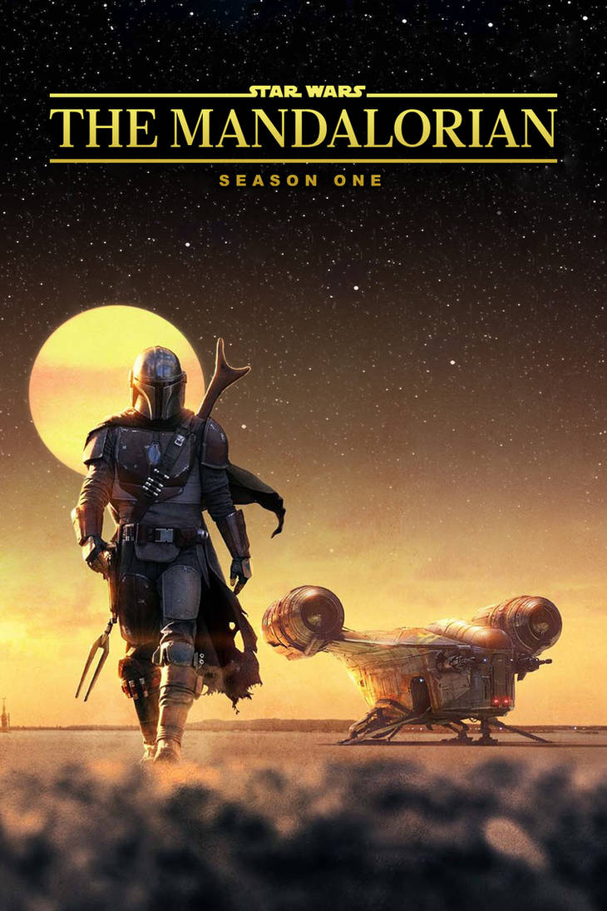
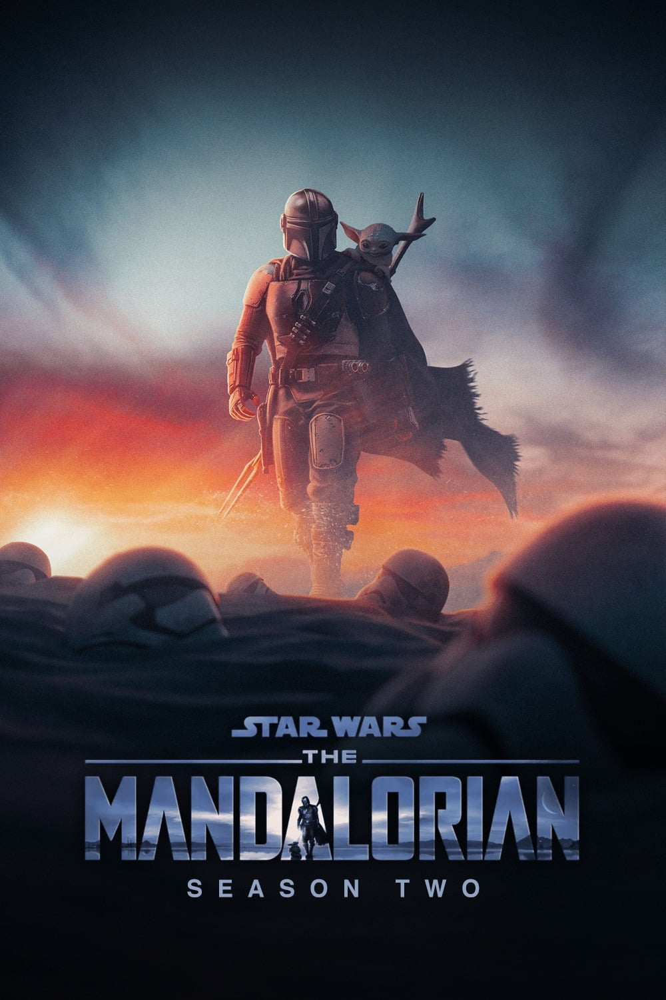
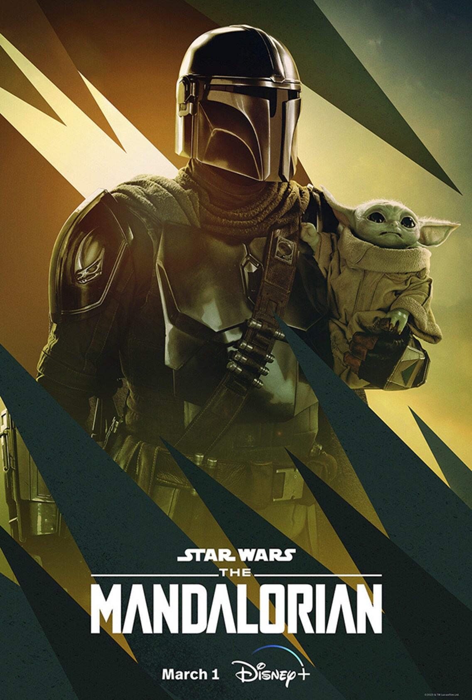

Saisons
Saison 1

{kind=link}
Après la chute de l'Empire et la fondation de la Nouvelle République, le métier de chasseur de primes ne paie plus. Le Mandalorien, surnommé Mando, connu pour être un des plus redoutables chasseurs de primes, accepte un contrat non officiel. Il s'agit pour lui, moyennant une prime élevée, de retrouver et de ramener à ses commanditaires un être vivant de 50 ans. En cours de mission, Mando découvre que, malgré son âge c'est un bébé ou un enfant de la même espèce que Yoda (espèce dont la durée de vie est de plusieurs siècles). Il découvre aussi que sa cible maîtrise déjà la Force. Après avoir rempli son contrat auprès d'un vieil homme portant un insigne de l'Empire entouré de nombreux Stormtroopers, et touché la prime, le Mandalorien se ravise, et revient sauver l'Enfant. Il doit ensuite prendre la fuite avec lui, poursuivi par tout ce que la galaxie compte de chasseurs de primes lancés à leurs trousses, ainsi que par une garnison d'Impériaux émergeant des cendres de l'Empire…
Saison 2
{kind=link}
Le Mandalorien Din Djarin poursuit sa quête à travers la galaxie pour trouver le peuple de l'Enfant dont le nom révélé par Ahsoka Tano dans le cinquième épisode est Grogu. Son peuple est décrit comme un ordre de sorciers appelés Jedi, et le but de Din Djarin est de le leur remettre.
Saison 3
{kind=link}
Depuis que Grogu est revenu à ses côtés, Din Djarin voyage en sa compagnie. Il est informé par l'armurière mandalorienne que la seule façon pour lui de « redevenir un mandalorien » (après qu'il soit devenu un « apostat » en retirant son casque volontairement) est d'aller se baigner dans les eaux sacrées d'une mine de la planète Mandalore. Cette planète a été littéralement pulvérisée et rendue impropre à la vie au cours d'une guerre passée face aux forces impériales. Mais Din Djarin décide de s'y rendre coûte que coûte. Après moult péripéties, il parvient avec l'aide de Bo-Katan Kryze qui lui sauve la vie, à se baigner dans ces eaux vivantes, et à réintégrer son clan... Il va ensuite accompagner Bo-Katan dans son parcours vers l'unification de tous les peuples de Mandalore et la reconquête de leur planète.